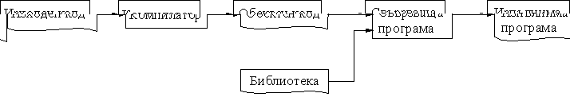

2. Програмиране на С++ (2)
 Какво е програмиране?
Какво е програмиране?
* потребители и програмисти
* алгоритми + структури от данни = програми
Транслиране на програмите
* машинни инструкции
1. Премести съдържанието на клетка 40000
от паметта в регистъра AX.
2. Извади 100 от регистъра AX.
3. Ако разултатът е положителен, премини към инструкцията,
намираща се в клетка 11280
от паметта.
Intel 80386: 161 40000
45 100 127 11280
* Асемблер
MOV
AX, [40000]
SUB AX, 100
JG 11280
---
MOV AX, [INT_RATE]
SUB AX, 100
JG INT_ERROR
Езици за програмиране
* C++
if (int_rate > 100) message_box("Interest
rate error");
* Паскал
if int_rate > 100 then writeln('Interest
rate error');
История на
езиците за програмиране
-- Много езици с различно предназначение
-- Езикът С - 1972 г., стандарт 1989 г.
-- Езикът С++ - Б. Страуструп 1985 г., стандарт ANSI/ISO
1998 г.
-- "Планирани езици" и "разрастнали се" езици
Системи за програмиране
-- С/С++: Borland C/C++ (DOS), Borland C/C++ Builder
(Win), MS Visual C++ (Win), gcc (Unix, Linux)
-- Pascal: Turbo Pascal (DOS), Borland DELPHI (Win)
-- Софтуерни системи с програмен език: MATLAB, Word,
...
Компилиране на проста
програма
#include <iostream>
using namespace std;
int main()
{ cout << "Hello,
World!\n";
return 0;
}
-- С++ различава малки от главни букви
-- Разполагане на програмата по редове
-- Пакет за поточен вход и изход
-- Стандартно пространство на имената
-- Главна функция main
-- Всеки оператор завършва с ;
-- Символ за нов ред
-- Операцията "изпрати към" и обекта екран
Процесът на компилиране
и изпълнение на програмата
* Написване на текста на програмата:
текстов редактор (изходен код, source code) [hello.cpp]
* Компилиране на програмата:
компилатор (обектен код, object code) [hello.o
или hello.obj]
* Свързване на програмата:
свързваща програма, linker (изпълним файл) [hello.exe
или hello или a]
* Изпълнение на програмата:
операционна система, програмна система, debug
Цикъл: редактиране - компилиране - настройка

Видове грешки
* "Грешка" при писане на програмата [текстов редактор]
* Грешка по време на компилация (синтактична грешка)
[компилатор]
* Грешка по време на изпълнение (Run-time error) [дебъгер]
* Грешка в алгоритъма (логическа грешка) [??]